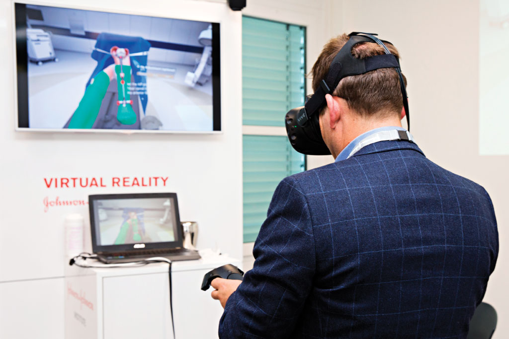

CS WHAT'S GOOD?
Virtual Reality Saving Lives
Virtual Reality has come a long way in the past few years, and is now being used to help surgeons, and trainee surgeons, improve their accuracy, allowing the success rates of surgeries to improve.
What is virtual reality?
Unlike augmented reality, virtual reality places an overlay on top of real environments, where as augmented reality creates a virtual world for the user to interact with. Use of such technology has improved the training of surgeons, with the Western Orthoedic Association stating that medical students trained using virtual reality had a 38% increase in steps correctly performed and completed it 20% faster than the other students who were trained using the traditional method.
The headsets worn, though they are very expensive, have led to students acquiring knowledge in nearly half the amount of time as those who didn't use the technology. This can also lead to increased precision when the surgery is performed.

The sets cost on average $10,000 each, but the technology is worth the money. In recent years, virtual realtiy technology has undergone vast improvements; the earlier version used to make users feel nauseated due to jerky movements, thus making it unusable for medicine.
Another way virtual reality technology is used is for surgeons to communicate with experts in their fields. In the past, if a surgeon is preparing for soemthing they're not familiar with, they would
communicate with experts via mobile, email or video calls. However, using this technology, Telemonitoring has been developed.
This allows the expert to observe what the surgeon is doing, in real time, and provide advice through out the procedure.
Furthermore, by using machine learning on videos taken during surgery, automated recommendations will be shown during surgery.
For example, critical structures are highlighted to esnure that they don't get damaged. This also allows the surgical team
to co-ordinate.
Microsoft HoloLens VR headsets are being used so that students can learn the human anatomy. It was found that this decreased
the amount of time that it took for students. For countries such as China, India and the US, surgeons need to be trained quicker
in order to keep up with the aging population. It is reported that India and China combined need 6,000,000 new physicians by 2020.
The future for Virtual Reality is very exciting, and as the technology improves the use of it in medicine is sure to expand.
Author
Alicia Hawksworth